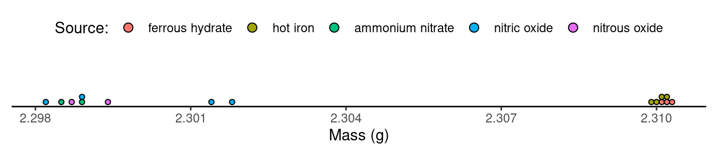

You can also download a PDF copy of this lecture.
When making inferences about a difference in probabilities (\(p_1-p_2\)), the test statistic for the test with the null hypothesis \(H_0: p_1 - p_2 = 0\) is \[ z = \frac{\hat{p}_1 - \hat{p}_2}{\sqrt{\hat{p}(1-\hat{p})\left(\frac{1}{n_1} + \frac{1}{n_2}\right)}}, \] where \(\hat{p}\) is the “pooled” proportion obtained by combining the two samples. The confidence interval for \(p_1-p_2\) is \[ \hat{p}_1-\hat{p}_2 \pm z\sqrt{\frac{\hat{p}_1(1-\hat{p}_1)}{n_1} + \frac{\hat{p}_2(1-\hat{p}_2)}{n_2}}. \] Note: The value of \(z\) used in the confidence interval is not the same as the value of \(z\) in the test statistic. For a test statistic we compute \(z\), whereas for a confidence interval we look up \(z\) for a given confidence level.
Example: A study published in The New England Journal of Medicine reported the results of a randomized experiment with 128 children and adolescents to investigate the effectiveness of the drug fluvoxamine in the treatment of anxiety disorders in young people.1 The study found that 48 out of 63 subjects that were given the drug showed a reduction in anxiety, in comparison to only 19 out of 65 subjects that were not given the drug. What can we infer about the effect of the fluvoxamine on anxiety reduction?
| Method | Source | Mass (g) |
|---|---|---|
| hot iron | atmospheric | 2.31017 |
| hot iron | atmospheric | 2.30986 |
| hot iron | atmospheric | 2.31010 |
| hot iron | atmospheric | 2.31001 |
| ferrous hydrate | atmospheric | 2.31024 |
| ferrous hydrate | atmospheric | 2.31010 |
| ferrous hydrate | atmospheric | 2.31028 |
| nitric oxide | chemical | 2.30143 |
| nitric oxide | chemical | 2.29890 |
| nitric oxide | chemical | 2.29816 |
| nitric oxide | chemical | 2.30182 |
| nitrous oxide | chemical | 2.29869 |
| nitrous oxide | chemical | 2.29940 |
| ammonium nitrate | chemical | 2.29849 |
| ammonium nitrate | chemical | 2.29889 |
 There is a noticeable difference between the mass of samples obtained from atmospheric sources (i.e., via ferrous hydrate or hot iron) and chemical sources (i.e., from reactions involving ammonium nitrate, nitric oxide, or nitrous oxide).
Here are the statistics for the two samples of observations of the mass of the nitrogen samples by source.| Source | Size | Mean | SD |
|---|---|---|---|
| atmospheric | 7 | 2.31011 | 0.00014 |
| chemical | 8 | 2.29947 | 0.00138 |
Let \(\mu_a\) and \(\mu_c\) be the mean mass measurement for isolated nitrogen samples obtained from atmospheric and chemical sources, respectively. What can we infer about \(\mu_a - \mu_c\)?
We can estimate \(\mu_1-\mu_2\) with \(\bar{x}_1-\bar{x}_2\). What do we know about the sampling distribution of \(\bar{x}_1-\bar{x}_2\)?
The mean of the sampling distribution is \(\mu_1-\mu_2\).
The standard deviation of the sampling distribution is \[\begin{equation*} \sqrt{\frac{\sigma_1^2}{n_1} + \frac{\sigma_2^2}{n_2}} \end{equation*}\] if the samples are independent. In practice this quantity can be estimated by replacing \(\sigma_1\) and \(\sigma_2\) with \(s_1\) and \(s_2\), respectively (i.e., the sample standard deviations).
The shape of the sampling distribution is approximately that of a normal probability distribution by an application of the central limit theorem.
How can we use this information to make inferences about \(\mu_1-\mu_2\)?
When making inferences about a difference in population distribution
means (\(\mu_1-\mu_2\)), the test
statistic for a test with the null hypothesis \(H_0:\mu_1 - \mu_2 = 0\) is
\[
t = \frac{\bar{x}_1-\bar{x}_2}{\sqrt{\frac{s_1^2}{n_1} +
\frac{s_2^2}{n_2}}}.
\] The confidence interval for \(\mu_1-\mu_2\) is \[
\bar{x}_1-\bar{x}_2 \pm t\sqrt{\frac{s_1^2}{n_1} + \frac{s_2^2}{n_2}}.
\] The degrees of freedom for the \(t\) distribution is computed as \(\min(n_1-1,n_2-1)\).
Note: The value of \(t\) used in the confidence interval is not the same as the value of \(t\) in the test statistic. For a test statistic we compute \(t\), whereas for a confidence interval we look up \(t\) for a given confidence level.
The distribution of the \(t\) is not that of a \(t\)-distribution. But it is approximately so if we use a degrees of freedom of \[ \text{df} = \frac{\left(s_1^2/n_1 + s_2^2/n_2\right)^2}{\left(s_1^2/n_1\right)^2/(n_1-1) + \left(s_2^2/n_2\right)^2/(n_2-1)}. \] But to avoid having to use this more complex formula we will use a lower bound to this formula which is simply \(\min(n_1-1,n_2-1)\) (i.e., the smaller of \(n_1-1\) and \(n_2-1\)).
Example: Recall the data from an observational study of finches on Daphne Major.3 We can summarize the data in the two samples as follows.| Year | Size | Mean | SD |
|---|---|---|---|
| 1976 | 751 | 9.6 | 1.0 |
| 1978 | 89 | 10.1 | 0.9 |
What can we infer about the change in the mean beak depth on Daphne Major between 1976 and 1978?
Example: A study published in the Journal of Applied Psychology examined the effect of stress on recall of police eyewitnesses.4 A total of 40 police recruits participated in a study in which half witnessed a non-stressful interrogation of a cooperative suspect and the other half witnessed a stressful interrogation of an uncooperative and belligerent suspect (the “suspects” were actually role-playing actors). After one week the researchers recorded the number of details that the eyewitnesses could correctly recall. For those that witnessed the non-stressful interrogation, the mean number of details reported was 53.3 with a standard deviation of 11.6. For those that witnessed the stressful interrogation, the mean number of details reported was 45.3 and the standard deviation was 13.2. What can we infer about the effect (if any) of the stressfulness of the interrogation on the accuracy of memory?
Walkup, J. T. et al. (2001). Fluvoxamine for the treatment of anxiety disorders in children and adolescents. The New England Journal of Medicine, 344, 1279–1285.↩︎
Data from Larsen, R. D. (1990). Lessons learned from Lord Rayleigh on the importance of data analysis. Journal of Chemical Education, 67(11), 925–928.↩︎
Grant, P. (1986). Ecology and evolution of Darwin’s finches. Princeton, NJ: Princeton University Press.↩︎
Yuille, J. C., Davies, G., Gibling, F., Marxsen, D., & Porter, S. (1994). Eyewitness memory of police trainees for realistic role plays. Journal of Applied Psychology, 79(6), 931–936.↩︎